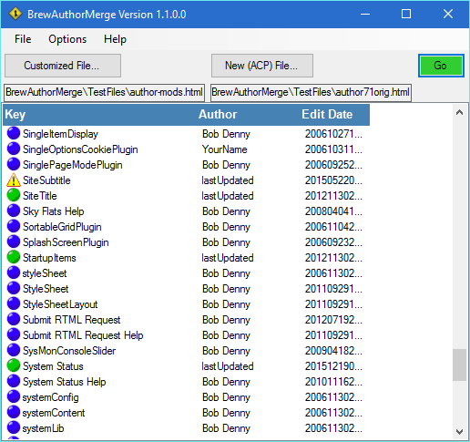
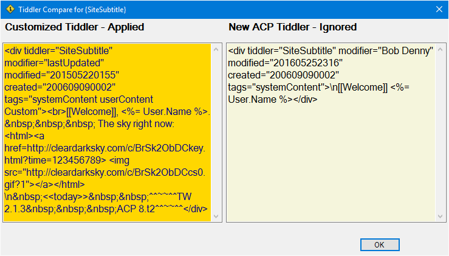
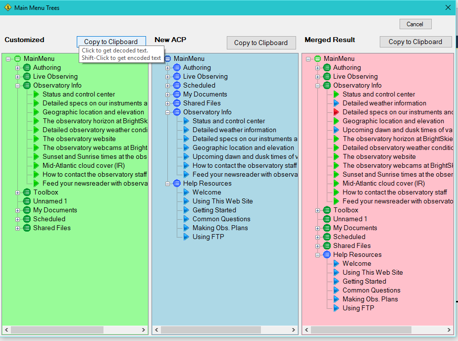
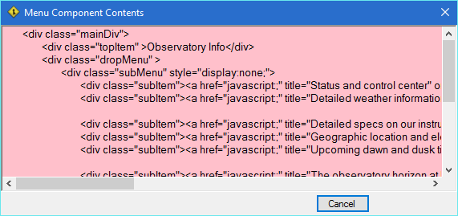
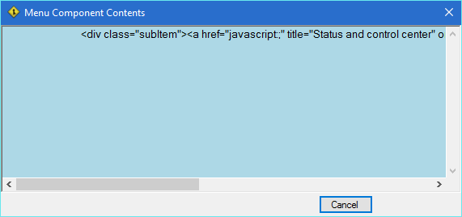

Screen Shots
Definitions
BAM works with two input files:
- ACP file. This is the newly installed author.html file as installed by a fresh install or update of ACP.
ACP provides the Authoring environment to allow you to modify the author.html file, adding tiddlers and modifying the
menu structure as desired. Your changes are saved to the same author.html file. I think that when this process occurs, the
prior author.html is backed up.
- Custom file. This your customized author file. When ACP is updated it backs up the current author.html file
(containg your customizations) to something like DocRoot/author-backups/author.bk-20150923_170957.html.
Note that the author-backups folder can include both your backup from the ACP update, and backups from multiple
Authoring sessions. You have to be careful to use the correct backup with BAM to merge in the correct customizations.
Viewing Tiddlers


When the old and new files have been merged, the tiddlers are listed on the main screen.
ACP standard tiddlers (from the ACP file)
are flagged with blue icons; entries which have been merged in from the Customized file
have green icons.
The yellow warning icon seen in the example screen indicates a tiddler which has been customized,
but the ACP file includes a newer version of the same tiddler. The customized version is merged in, but
you need to manually verify whether any of the changes made to the newer ACP version are relevant.
As described below, click on the tiddler in the list to see the two versions.
Clicking on an entry on the Main Screen brings up the Tiddler Comparison screen on the right which shows the two versions of the tiddler. In this case we clicked on the
problematic SiteSubtitle tiddler to see the two versions.
Note that the labels above each tiddler indicate which one is being used (merged into the resulting menu), the Customized one (from the Customized file)
or the ACP one (from the newly installed ACP file). The gold field color also indicates which tiddler has been merged into the resulting author file.
Viewing Main Menu

As a special case, clicking on the MainMenu tiddler brings up the Main Menu Trees screen instead of the Tiddler Comparison window. This shows three tree structures.
- The left tree shows the Main Menu structure from the Customized file (green is Customized).
- The middle tree shows the Main Menu structure from the new ACP file (blue is ACP).
- The rightmost tree shows the merged result of the Main Menus. This menu tree will be output in the merged author file.
A couple of points about this example:
- Looking at the Merged results, most of the items are green. In general, custom file entries take precedence.
If there are matching identical ACP entries it doesn't matter which one is used. The blue entries are generally menu items that are new,
not found in the Customized file.
- In this case, the user re-ordered the main divisions of the menu. "Observatory Info" was moved up, as was the "Toolbox" section.
These re-orderings have carried through to the Merged Menu.
In addition, the entire Help Resources section was added in from the ACP menu.
- Looking at the pink merged menu, several items are flagged as blue (for example, "Detailed weather information"). These are entries
that were not present in the Customized file, but were added from the ACP file (blue means ACP file).
Note: This would usually occur due to new entries in the new ACP update. However, this can also occur if a user removes menu entries he does not use.
In this case, each time the merge process is run BAM
will re-insert the menu entry from the ACP menu. To avoid this situation, instead of deleting the menu entries place ASP If statements around
the unused entries (i.e., if(false)). The entries will still be there, so the ACP entry doesn't get copied back in again.
- Some entries are flagged as Red. These are menu entries present in both the Customized and ACP files, but the contents of the
entries are different. BAM has no a priori way to determine which entry should be used so the Customized Menu entry is merged in.
However, perhaps Bob has made some changes that should be incorporated into the Customized entry. This requires
manual adjustment.

Clicking an entry in any of the trees pops up a dialog showing the actual menu code for that menu element and any elements below. As seen in the two images
above, the color background reminds you which tree you are looking at (pink is the merged menu, blue is the ACP menu, green is the Customized menu).
In these examples, the pink popup is the result of clicking on the pink tree node labeled "Observatory Info".
The code for this node, and all of the nodes under it, is displayed in the dialog.
The Blue popup is the result of clicking on the "Status and Control Center" node of the Main Menu Trees in the blue ACP menu.
This is a leaf node, so only the text for that menu entry is displayed.
Note that you can copy the code from this dialog for pasting into some other editor as desired.
Clicking on a Main Division node shows several code pieces not shown in the tree. These constructs are logically associated with the Main Division. The
screen tree is less cluttered by not displaying these pieces.
Copying Main Menu
As noted in the ToolTip in the Main Menu Trees screen above, clicking the Copy to Clipboard button copies the entire decoded Main Menu structure to the clipboard. The data can then be pasted into another
editor such as Notepad, or the ACP Authoring mode for the Main Menu.
Holding the Shift key down while clicking will copy the encoded form of the menu to the Clipboard.